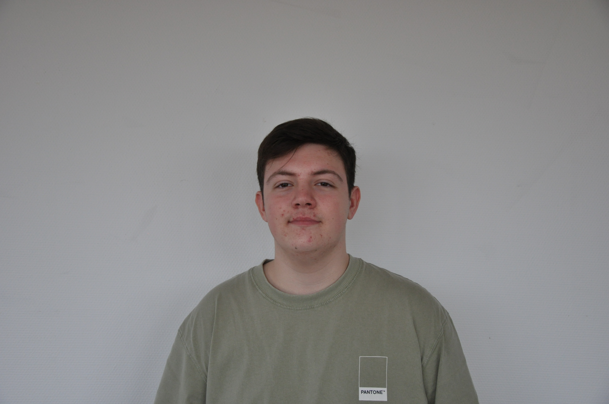

Étudiant en informatique, motivé et adaptable. J'apprends à construire des projets concrets, à travailler en équipe et à progresser chaque jour.

01 — À propos
Je suis un étudiant motivé, fiable et dévoué, doté d'une grande capacité d'adaptation à de nouveaux environnements et défis. J'aime apprendre et améliorer continuellement mes compétences. Grâce à mes bonnes aptitudes relationnelles, je communique facilement avec les autres et établis rapidement des relations de travail positives. Je suis à l'aise pour travailler en équipe tout comme de manière indépendante, et je prends mes responsabilités au sérieux.
02 — Progression
HTML, CSS et TypeScript pour construire des pages structurées, lisibles et responsive.
Navigation en ligne de commande, scripts shell, compréhension du système de fichiers Unix.
Utilisation de Git pour collaborer, gérer des branches et organiser le travail à plusieurs.
Découverte des procédures et protocoles de sécurité informatique ainsi qu'apprendre à reconnaître les vulnérabilités.
03 — Projets
Chargement des projets...
04 — Expériences
Exploration des procédures internes de cybersécurité et participation à des tâches de gestion des données et de sécurité informatique, sous la supervision de professionnels expérimentés.
Travail en équipe, gestion efficace des commandes et des situations stressantes dans un environnement rapide.
Vente et conseil en fromagerie, accueil et analyse des besoins clients, sens du service et de la mise en valeur des produits.
05 — Formation
Diplôme du brevet obtenu au collège Caousou à Toulouse.
Examen d'anglais Cambridge passé en candidat libre, attestant d'un niveau avancé à l'écrit et à l'oral.
Obtention du baccalauréat au Lycée Polyvalent Bellevue à Toulouse.
Formation par projets en informatique : développement web, scripting shell, travail en équipe avec Git, et découverte de TypeScript.
06 — Contact
N'hésitez pas à me contacter pour toute question, proposition ou simplement pour échanger.